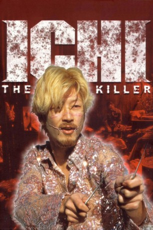

#1765 Ichi the Killer
 gesehen am 25.08.2015
gesehen am 25.08.2015
 
 IMDB-Wertung: 7.1 / 10
IMDB-Wertung: 7.1 / 10  Metascore: 55
Metascore: 55 
Der Yakusa Boss Anjo ist zusammen mit einer Prostituierten und 100 Millionen Yen verschwunden. Kakihara macht sich zusammen mit dem Rest von Anjo’s Truppe auf die Suche nach dem Chef. Ein säuberlich aufgeschlitzter Safe am Tatort führt sie auf die Spur von dem mysteriösen “Ichi”. In einem Superheldenkostüm und mit Klingen versehenen Schuhen richtet Ichi unter den Triaden regelrechte Blutbäder an, die wiederum mit wachsender Begeisterung von Kakihara wahrgenommen werden. Der ist nämlich regelrecht fasziniert vom grenzenlosen Treiben des geheimnisvollen Killers. Bald kreuzen sich die Wege der beiden, doch es soll nicht alles so kommen, wie Kakihara sich das erhofft ...
Jahr: 2001
Dauer: 129 Minuten
FSK: BPjM Restricted
Land: Japan Studio: I-On New MediaTonspuren:
Untertitel: Deutsch,
Auflösung: 1080p (1920x1080) Größe: 14233 MB
Genre: Action, Thriller, Horror, Drama, Komödie, Krimi
Regisseur: Takashi Miike
Drehbuch: Sakichi Satô, Hideo Yamamoto
Soundtrack: Karera Musication, Seiichi Yamamoto
Darsteller:
 Tadanobu Asano als Kakihara
Tadanobu Asano als Kakihara- Shin'ya Tsukamoto als Jijii
 Jun Kunimura als Funaki
Jun Kunimura als Funaki- Nao Ômori als Ichi
- Paulyn Sun als Karen
- Susumu Terajima als Suzuki
- Shun Sugata als Takayama
- Toru Tezuka als Fujiwara
- Yoshiki Arizono als Nakazawa
- Kiyohiko Shibukawa als Ryu Long
- Satoshi Niizuma als Inoue
- Suzuki Matsuo als Jirô / Saburô
- SABU als Kaneko
- Moro Morooka als Coffee Shop Manager
- Hôka Kinoshita als Sailor's Lover
- Hiroshi Kobayashi als Takeshi
- Mai Goto als Sailor
- Rio Aoki als Miyuki
- Yoshiyuki Morishita als Pub Patron
- Setchin Kawaya als Pub Proprietor
- Yuki Kazamatsuri als Yakuza Girl
- Sakichi Satô als Man Kicking Ichi
- Kaori Sugawara als
- Hideo Sako als
- Mako Takeda als
Datei: X:\FSK18-Eastern\Ichi the Killer (2001, FSKBPjM Restricted, 1920x1080).mkv seit 18.08.2015
Festplatte: FSK18
 Es gibt insgesamt 102 Filme in der Gruppe 'FSK18-Eastern'
Es gibt insgesamt 102 Filme in der Gruppe 'FSK18-Eastern'